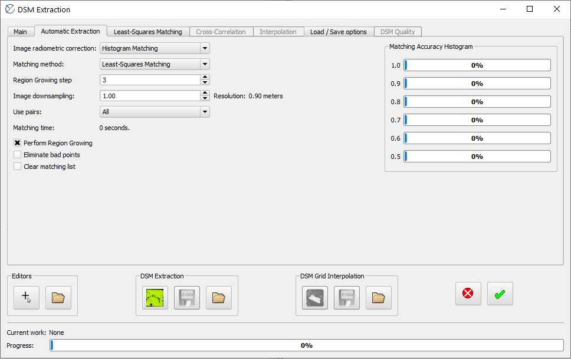
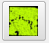
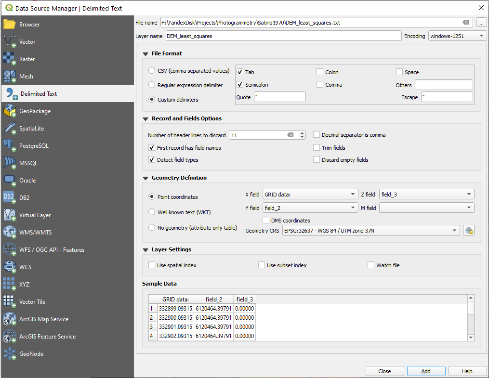
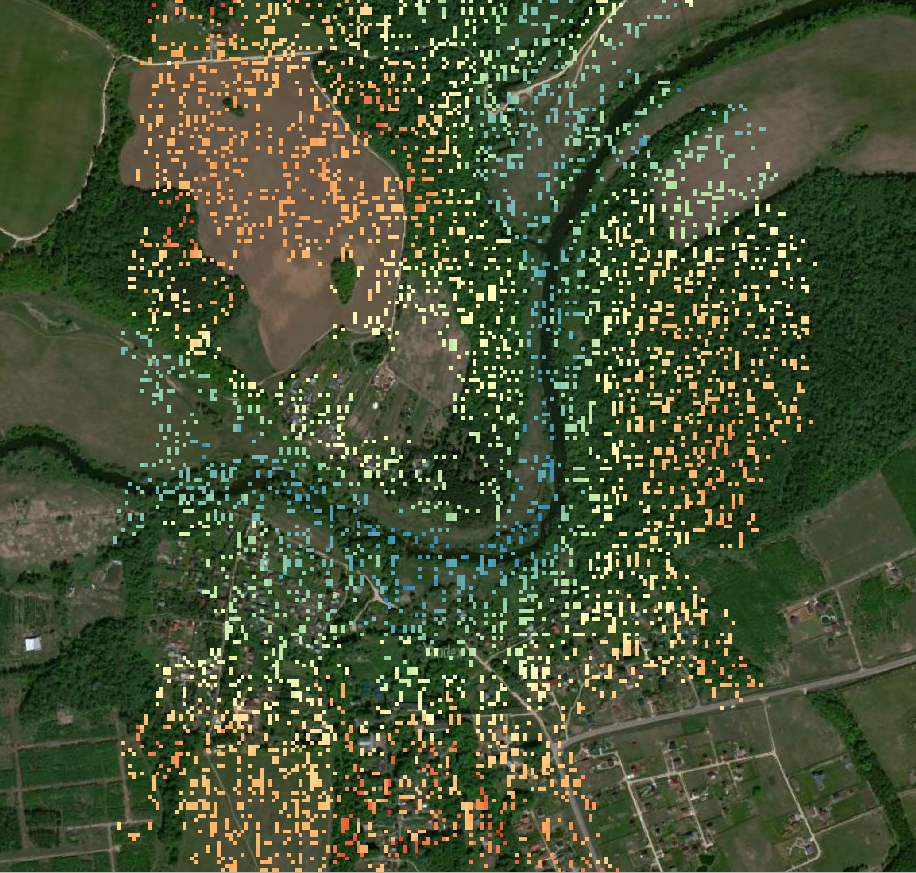
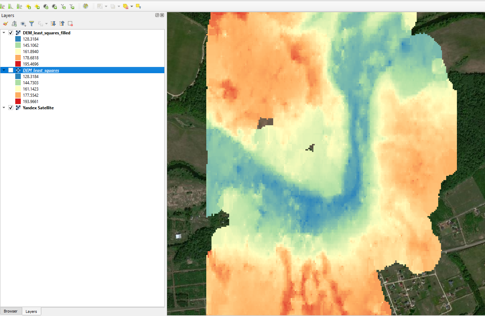
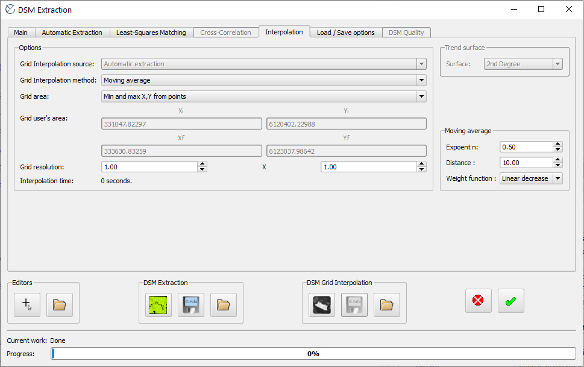
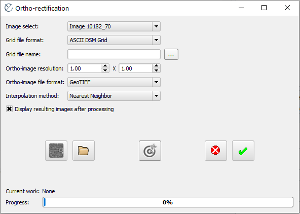
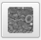

7 Получение ЦММ и ортотрансформация
7.1 Исходные данные
В качестве исходных данных в этой работе выступают ориентированные и привязанные снимки из предыдущей модели, а также полученная на их основе стереомодель в программе E-foto.
7.2 Построение ЦММ
Выберите команду Execute – DSM Extraction. Откроется окно соответствующего модуля.Перейдите во вкладку Automatic Extraction.

Здесь можно выбрать тип радиометрической коррекции – для чёрно-белых снимков лучше всего выбрать Histogram matching. Для обработки стереопар и поиска тождественных точек в программе доступно два метода – кросс-корреляции (Cross-correlation) и наименьших квадратов (Least-Squares Matching). Проделайте сначала всё одним методом, затем попробуйте другой и сравните результат. Для ускорения процесса построения лучше задать параметр передискретизации (Image downsampling) 2 (размер пикселов уменьшиться в два раза). В окне Use pairs выберите ту стереопару, по которой нужно построить ЦММ. Нажмите на кнопку

для запуска процесса. По окончании процесса откроется окно для просмотра найденных пикетов в виде жёлтых крестиков.После того, как пикеты были извлечены, необходимо их интерполировать. Для этого нажмите на соответствующую кнопку . После этого можно экспортировать полученный грид.Перейдите во вкладку Load/Save Options, выберите DSM extraction file format – облако точек без индексов, а Grid file format – ASCII DSM Grid. В разделе DSM Grid Interpolation внизу окна нажмите на сохранение и сохраните текстовый файл с высотными данными.
7.3 Работа с высотными данными в QGIS
Добавьте в QGIS полученные ранее высотные данные как текст с разделителями. Обратите внимание, что необходимо правильно выбрать символ разделителя, указать количество строк заголовка файла, которые мы не учитываем, указать соответствующие поля для координат, а также правильную систему координат.

Добавленные данные необходимо сохранить либо в виде шейп-файла, либо в базе геоданных, щёлкнув правой кнопкой по слою Экспорт – сохранить как. Для получения растровой поверхности используйте инструмент Grid (Nearest Neighbor)…. Его можно найти через меню Raster – Analysis. Укажите поле для Z-значений в настройках инструмента. После настройки символики ваша ЦММ примет примерно следующий вид – очевидно, что в ней много пропущенных данных.

Для заполнения пропусков воспользуйтесь инструментом Raster – Analysis – Fill nodata…. После этого ЦММ должна принять примерно следующий вид:

7.4 Построение производных поверхностей
В QGIS доступны многие инструменты для построения производных поверхностей от ЦМР и ЦММ, например:
Углы наклона – Raster – Analysis – Slope….
Экспозиция склонов – Raster – Analysis – Aspect….
Аналитическая отмывка рельефа – Raster – Analysis – Hillshade….
Кроме того, мы можем извлечь изолинии (горизонтали) с помощью инструмента Raster – Extraction – Contour….
Для сопоставления высот ЦМР и ЦМП можно воспользоваться любым калькулятором растров, например, Raster – Raster Calculator
7.5 Верификация ЦММ по точкам стереоизмерений
Измерьте высоты с помощью стереокомпаратора в местах, где есть крупные пропуски данных в ЦММ. Полученные точки можно экспортировать в шейпфайл, нажав на кнопку . В открывшемся окне выберите формат сохранения SHP.
Для извлечения значений высот ЦММ в точки используйте инструмент в QGIS Sample Raster Values. Этот инструмент записывает в виде атрибута значения ячеек растра, в которые попадают точки. Для расчёта собственных значений высот точек шейпфайла (полученные в результате стереоизмерений) можно зайти в калькулятор поле и написать выражение для нового атрибутивного поля z($geometry).
7.6 Ортотрансформация с использованием полученной ЦММ
Для ортотрансформации снимков в E-foto требуется ЦММ в собственном формате, что обуславливает необходимость её коррекции (заполнения пропусков) внутренними средствами программы. Для этого в модуле DSM Extraction после извлечения ЦММ перейдите на вкладку Interpolation. В параметре Grid Interpolation method необходимо выбрать Moving average (обычно установлено по умолчанию). В параметре Distance укажите размер плавающего окна осреднения в пикселях, например, 10.

Сохраните ЦММ в формате ASCII DSM Grid и выйдите из модуля.
Запустите модуль ортотрансформации Execute – Ortho-Rectification.

Выберите изображение, которое необходимо ортотрансформировать, укажите формат ЦММ такой же, как вы указывали для её сохранения, укажите путь к файлу ЦММ. В качестве выходного формата для изображения укажите GeoTIFF. Для запуска процедуры нажмите

.Ортотрансформированное изображение скорее всего сохранится без СК, но вы сможете её задать в QGIS. для сопоставления ортотрансформированного изображения с исходным можно воспользоваться инструментом Шторка.